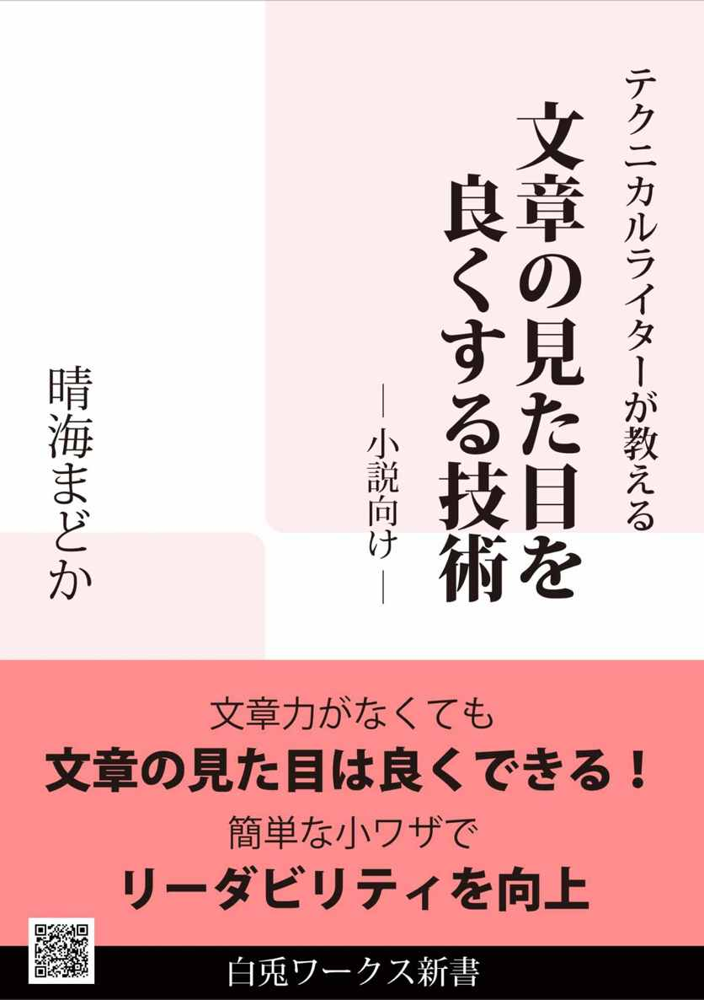

| テクニカルライターが教える、文章の見た目を良くする技術 | |
| 晴海まどか | |
| white rabbit works (2013) | |
Kindle作家でテクニカルライターでもある著者が教える、
文章の見た目（＝Readability）を向上するための文章術！
全角・半角文字の使い分けなど、文章力がなくてもできるちょっとした工夫で
文章の見た目はぐっとよく良くできます。
文章を書く人なら知っておきたい小ワザの数々をご紹介！
「きんどう」で連載していた記事に加筆・修正を加え、
書き下ろし「句読点の使い方」「冗長表現」を追加。
連載時に1,700はてぶを越えた記事を含む、物書き必見の1冊です。
※主に小説を執筆する方に向けて記載していますが、
小説以外の文章を書くときにも役立つ情報も多数盛り込んでいます！
----------
■目次
はじめに
1. アルファベットの全角・半角の使い分け
2. 数字の使い分け
3. 記号の使い分け
4. カタカナ語の統一
5. 漢字表記のよりどころ、常用漢字
6. ひらがなの使いどころ
7. 句読点の使い方
おまけ：冗長表現
おわりに
----------
※一般的な文庫本換算：110ページ（39字×15行計算）
───────────────────────
どうもこんにちは、晴海まどかと申します。
私はＫＤＰで小説を出しているしがない物書きですが、七年強、ＩＴ業界の片隅で、テクニカルライターという技術文書専門ライターをやっていました。
テクニカルライターには、小難しい説明をユーザー向けにわかりやすい文章で説明する、というスキルが必要です。この本では、そこで得た文章作成ノウハウをもとにした、小説などで使える文章力がなくてもできる簡単な小ワザを紹介していきます！
学校では教えてくれない、意外と知らない文章作成ノウハウ。少しでもお役に立てれば幸いです。
突然ですが、目の前に同じくらい性格が悪い女性が二人いるとします。その内の一人は十人並みの容姿で、もう一人はアイドルクラスの美女です。あなたはどちらかの女性とお付き合いしなければなりません。
さて、どちらの女性を選びますか？
という質問があったら、世の男性の多くが美女の方を選ぶと思いませんか？ 同じくらい性格が悪いなら、せめて見た目が良い方を選びたい、というのが多数派じゃないでしょうか。
では、これを文章に置き換えてみましょう。
同じくらい面白くない、残念きわまりない小説が二作あったとします。どちらかを選ばなければならないとしたら、少しでも読みやすい小説を選択しませんか？
ということで、見た目がいい文章＝読みやすい文章、とこの本では定義づけします。読みやすさ、つまりはリーダビリティ（Readability）です。
リーダビリティの高い文章には、文字数、句読点の位置、誤字脱字がないなど、様々な要素が必要です。中にはもちろん長年の訓練が必要なものもあります。が、文章力とは関係のないちょっとした工夫一つで、若干かもしれませんが、リーダビリティが向上することがあるのです。
この本では、そんなちょっとした工夫・小ワザを紹介していきます。
この本は、全体を通して小説執筆時を想定した内容を中心に記載しています。が、小説以外の文章を書くときにも役立つような情報も随所に挟み込んでいます。
前半三章までの内容は、縦書きの文章執筆時の内容をメインに記載しています。
ＫＤＰで個人出版（電子書籍出版）するケースを想定した記載を多分に含んでいます。
この本は、Kindleまとめサイト「きんどう」にて連載した「テクニカルライターが教える、文章の見た目を良くする技術」に加筆・修正を加えたものです。
いきなりですが、一つ例文を見てみてください。
【例１】
「このTシャツかっこいいっしょ？ Ｓｏｌｉｄってブランドのなんだけどさー」
彼の紫色のTシャツには、『Ｓｏｏｏｏ Ｃｏｏｏｏｌ！！』と微塵のクールさも感じさせない文字列がプリントされていた。丸が多すぎて、もはやゼロだかOだかわからない。
それで、と私はTシャツについての言及はしないで本題を切りだした。
「Xの正体がわかったって本当？」
彼はにんまりと笑んで、「Ｙｅｓ」と答えた。
＊＊＊
読めるけど、なーんとなく読みにくくありませんか？ この文章を読みにくくしている原因の一つが、アルファベットの使い方にあります。
というわけで、この章では執筆時に迷いがちなアルファベットの全角・半角の使い分けについてご紹介します。
最初に結論です。「ＷＡＲ」という単語を縦書きの文章で記載する場合は、
・「ダブリュー・エー・アール」のようにアルファベットそのままの読みで読ませたいときは全角
・「ウォー」と英単語として読ませたいときは半角
と使い分けるようにしましょう。
理由は簡単です。
全角アルファベットというのは、日本語特有の文字種です。全角文字は二バイト文字とも呼びますが、この二バイト文字は英語圏にはありません。ということは、全角文字というのは、アルファベットであろうがなかろうが、日本語、という考え方ができるわけです。
また、日本語はひらがな・漢字に代表されるように、「一文字一音（以上）」の言語です。一文字一音、つまりは「Ａ、Ｂ、Ｃ」を「エー、ビー、シー」と読ませたいときは、日本語である全角アルファベットを使う方が良さそうに思えませんか？
つまり、英単語ではなく、日本語の一部としてアルファベットを登場させたい場合は、全角で書いた方がリーダビリティが上がると考えられるわけです。
【例】Ｔシャツ、マジンガーＺ、ＤＶＤプレイヤー
半角アルファベットは縦書き文章だと九十度回転します。はっきりいって、リーダビリティはこれだけで落ちます。ガタ落ちです。
先ほど例にも上げた「Ｔシャツ」の場合、半角にしてしまうと「T」だけがくるっとしちゃうわけです。これまで文章をすらすら読んでいたのに、このたった一文字のくるっとのせいで、ほんの少し、文章が読みにくくなってしまうのです。
ただし、半角文字が必ずしも悪いわけではなく、英単語として読ませたい場合は全角にすると逆効果です。先ほど説明した「一文字一音」の逆で、英語は「複数文字一音」の場合が多いわけですから、「一文字一音」の全角文字では意味を汲み取るのに時間を要してしまいます。
つまり、文字がくるっとするデメリットを考慮しても、英単語の場合だけは半角文字を使った方がリーダビリティが上がるというわけです。
【例】Amazon、Kindle、Good job!
単純に全角・半角に分類できない単語もあります。例えば、「ＳＯＳ」「ＯＫ」「ＮＧ」。英語のような気もするし、でもアルファベット読みそのままだし......。
これくらいの単語なら、個人的にはどっちでもリーダビリティは変わらない気がします。決めの問題なので、作品全体で統一されていれば問題ないかと。
ちなみに私だったら、「ＳＯＳ」も「ＯＫ」も全角で書きます。読み自体はアルファベットそのままなので。
あと、ＫＤＰ本でたまに「ＯＫ」にこんな感じ→「OK」で縦中横文字の設定をされているのを見ます（〈span class="tcy"〉のタグですね！）。二文字くらいならありかなーとは思いますが、「SOS」とか三文字になると文字が縮まりすぎててちょっと狭苦しいかも。三文字だったら全角にした方がいいですね。
いかがでしたでしょうか？ 全角・半角を意識して使い分ける、これだけで文章の読みやすさが少しだけ変わると思いませんか？
もしかしたら「俺はアルファベットは半角文字で統一するポリシーなんだ！」という方もいらっしゃるかもしれませんし、それを止めようなどとは思っていませんが、書き手にとってのこだわり＝読み手にとっての読みやすさになっているかどうかは一考の価値があります。読者あっての我々書き手。それを考える機会につなげていただければこれ幸いです。
さてさて、アルファベットの使い分けを見てみたところで、次の章では数字の全角・半角の使い分けを見て見ましょう。数字は全角・半角だけでなく、漢数字もあるのでちょっと厄介！
第二章は数字の使い分けについてです。これは結構迷うし難しいですよね。
ここでは、縦書きの小説の場合はどうしたらよさそうか、を中心に説明していきます。
さて、まずは日本語の文章で頻出する数字の文字種についておさらいします。主に次の三種類があります。
・漢数字（一、二、三......）
・全角アラビア数字（１、２、３......）
・半角アラビア数字（1、2、3......）
うーん、何をどう使うか迷いますよね。
しかも、漢数字に至っては、例えば1500だと「一五〇〇」「千五百」の二表記あるわけです。
本によっては「縦書きの場合は漢数字」と明言しているものもありますが、小説など表現規則が作者にゆだねられているフランクな文章の場合は、アラビア数字とうまく使い分けて読みやすさを向上させたいところです。
前述のとおり、縦書きの場合は基本的には漢数字で書くことをおすすめします。が、アラビア数字の方が読みやすいと私が考えているパターンがいくつかあるので、まずはそちらをご紹介します。
なお、以降全角アラビア数字、半角アラビア数字は全角数字、半角数字と略して表記します。
まずは、一番わかりやすい半角数字から。
半角アルファベットと同様、半角数字も縦書きだとくるっと回転してしまいます。なので必要以上に半角数字は使わないが鉄則ではあるのですが、それでも次の場合は半角数字を使った方が読みやすくなります。
★桁数が多い数値情報
「暗証番号は？」「135764654354658！」なぁんて場合や、小難しいデータの解析結果など、桁数がそこそこある（感覚的には五桁以上）数値情報の場合。これを漢数字や全角数字で書いちゃうともうげんなりです。何桁かもよくわかりません。
なお、金額など桁数が意味を持つ数値を半角数字で表す場合は、三桁区切りをお忘れなく！ （例：123,400,000）
★計算式
「300×(x－y)=300x-300y」みたいな、桁数がそこそこあったり、アルファベットを含んだりする数式の場合。
ただし、「3×2＝5」くらいの計算式だったら、全角数字「３×２＝５」でもありかなと個人的には思っています（これも決めの問題で、全体で統一されていればＯＫかと）。
あと、二～三桁の数値情報を漢数字ではなくアラビア数字で表現したい、という場合は縦中横を設定するのもありだと思います。
今度は全角数字を使うケースです。
★桁数が少ない数値情報
数値情報なのでアラビア数字で書きたい、けど桁数が少ない、なんて場合は全角がおすすめ。
例えば、「この問題の答えは？」「７です」みたいな会話の場合、「７」がくるっとしてしまうと読みにくくなります。
四桁くらいまでなら一目で判別できるので、全角数字にするのはどうでしょう。
★英語読みする数字
日本語の一部として数字を英語読みさせたい場合は、全角数字がおすすめ。
これは、全角アルファベットは日本語の一部として使う場合と考え方は似ているかも知れません。
例えば、「ナンバー一」「ナンバーワン」は「ナンバー１」としてはどうでしょう？
なお、「スリー、ツー、ワン」など、英語読みの数字だけの場合は、カタカナにするのがおすすめ。
「３、２、１」と書くと、「さん、に、いち」と読まれる気がします。どっちで読まれてもいいならどっちでもいいですが。
あとは、「３、２、１」とルビをふるのもありかもしれません。
じゃあ漢数字は？ というと、これがアラビア数字の比じゃないくらい難しい。
はっきりいって、これが絶対的に正しい！ というルールはありません。フリーダム！
そんな中で、縦書き小説での読みやすさを考えた場合の、私のおすすめをご紹介。
漢数字では、「一・十・百・千・万・億......」という単位の数詞を使って数字を書きます。
これを、命数法といいます。
この命数法を使った表記が日本語としては正しく、「三〇」などの漢数字の「〇（ゼロ）」を使った表記は、アラビア数字の表記を便宜的に模しているものだそうです。
なので、日本語の文章といえばの代表格でもある縦書き文章では、「〇（ゼロ）」を使わない命数法の表記を使うのが基本です。次のような場合がそうでしょうか。
・日本の年号：平成二十五年、昭和五十八年、など。
・月日：九月十日、十二月二十五日、など。
・年齢など日常会話に出てくるような数字：二十五歳、五百円、千本、一万年
漢数字の〇は前述のとおりアラビア数字を便宜的に模している場合に使います。つまり逆を言えば、漢数字の〇を便宜的に使うシーンがある、ということにもなります。
じゃあどんな場合？ というと、ゼロであることを強調したい、ゼロを使った方が読みやすい場合におすすめします。
具体的には、西暦の年号（一九九〇年、二〇〇四年、など）や、電話番号、部屋番号などの桁数に意味がない数字列の場合です。
また、「二〇・五」といった漢数字で小数点入りの数字を書きたい場合も、「〇」を使うと良さそうです。この場合、小数点に使う「・（中点）」は日本語の一部に混じった記号なので、全角を使います。
日本語の数字のために生まれた命数法ですが、これにも欠点が一つ。
「十」や「千」などの単位の数詞は一つの数字の中に複数含まれると読みにくくなることが多いんです。
いくつか例をあげてみます。
【例１】 一万五千三百二十 → 一万五三二〇
こういう場合は、大きい桁の数詞を一つ残し、下の桁は○を使うと読みやすくなります。
【例２】 三億六千五百十万 → 三億六五一〇万
最後の桁が「万」以上の数詞で終わっている場合は、「万」以上の数詞だけを残すと読みやすくなります。
これらの例を見てみると、どうやら桁数が増えた場合に「十」「百」「千」を使うと読みにくくなるようです。
ただし、次の【例３】のようにこれらの数詞が冒頭に来る場合、または【例４】のように切りがいい場合は除きます。
【例３】 十億七千万、百万五千
この場合は数詞が複数ありますが「一〇億七〇〇〇万」「一〇〇万五〇〇〇」とバラすと読みにくくなりますね。
【例４】 千、百、十
「千円」をわざわざ「一〇〇〇円」と書くのは読みにくいし不自然ですよね。
では、これまでの内容を踏まえて例文を見てみましょう！
【例１】
三〇、二九、二八、二七、二六......
残り１つとなったタイマーの数字は、無情にもペースを落とすことなくカウントダウンを続けていた。
「業界ナンバー一のハッカーなんでしょ！？ たった4桁のパスワードがまだわからないの！？」
彼は淡々とした表情で訊いてきた。「Ｘの誕生日は？」
「一二月二〇日！」
彼は一二二〇と入力した。エラー音が鳴り響く。
カウンターの数字が十になる。もうおしまいだ、と私が思ったその直後、彼はある数字を打ち込んだ。
「......嘘、」
あと１秒というところで、爆弾のタイマーが解除された。
〇三一一。三月一一日は私の誕生日だった。
【例２】
30、29、28、27、26......
残り一つとなったタイマーの数字は、無情にもペースを落とすことなくカウントダウンを続けていた。
「業界ナンバー１のハッカーなんでしょ！？ たった四桁のパスワードがまだわからないの！？」
彼は淡々とした表情で訊いてきた。「Ｘの誕生日は？」
「十二月二十日！」
彼は１２２０と入力した。が、エラー音が鳴り響く。
カウンターの数字が10になる。もうおしまいだ、と私が思ったその直後、彼はある数字を打ち込んだ。
「......嘘、」
あと一秒というところで、爆弾のタイマーが解除された。
０３１１。三月十一日は私の誕生日だった。
＊＊＊
どうでしょうか？
正直なところ、アルファベットの使い分けほど劇的な差はないかもしれません。が、小説の慣例はどちらが多いかで考えるならば、やっぱり【例２】じゃないかなーと思います。アラビア数字ばかりになると、小説ではなくて雑誌の記事とかノンフィクション系の別の何かを読んでいるような感じになりませんか？ そういう雰囲気を狙った作品なら逆にありだと思いますけど。
ちなみにですが、【例２】の一文目はタイマーに表示された数字を表しているので、あえて半角数字×縦中横にしてみました。
その数字が何を表しているかによって書き方を工夫するというのも、小説では一つの手だと思います。
長々と説明してきたくせに結論はそれかいという感じなのですが。
例えば、アラビア数字の全角・半角の使い分けや命数法と〇の組み合わせなどは読みやすさに劇的に差が出てくるので別ですが、「五〇〇円」でも「五百円」でもそこまで読みやすさに大差はないと思うんですよね。
実際、商業出版されている小説を比較してみても、出版社や著者によって数字の書き方にはばらつきがあります。特にバラついているのが十の桁の数字（十五 または 一五）。ただ、これが作品の中で統一されていないと見た目には美しくありません。
結局のところ、小説は書いているあなたがルールブック。特に漢数字の使い方でフリーダムな部分については、自分が読みやすいと考えるルールを定めてそれで統一する、というのが大事じゃないかなと思います。
ここまでは小説の場合を想定したお話をしてきましたが、実用書やドキュメンタリーなどのノンフィクションの場合は、「記者ハンドブック」という出版・マスコミ業界では多分お馴染みだと思われる、左記の用事用語集などを参考にされるとよいかと思います。
「記者ハンドブック 新聞用字用語集」共同通信社 編著
ちなみにこの本、数字の書き方はもちろん、常用漢字に対応した用事用語の使い方、外来語の用例集、差別語の一覧なんかも載っています。
Kindle版が出ていないのが残念なんですが、一冊手元にあると非常に便利だし勉強になります。小説しか書かないという方も、世の中にはこういうルールもあるんだという気づきになるのではないかと。
今回は先に例文を一つ見てみましょう。
【例１】
体力の限界だ。私はとうとう、近くの電柱に手をついた。そこには『飼い犬を探しています!』という手書きのポスターが貼ってある。先週、私が貼ったものだ。
「こんなんでへばっちゃ《何気に名探偵》の名が泣くよ？」
私は額の汗を手の甲で拭いつつ、彼を睨み返した。
「《何気に名探偵》の〈何気に〉って何!? そもそもそんな名前ないし!」
彼は私の抗議をあっさりとスルーし(失礼な奴だ!)、さっさと歩いていってしまう。
『彼、頭だけはいいから』
私に彼を紹介した山上刑事の言葉が脳裏に蘇った。
「頭が良くても、なぁ・・・」
畜生、と内心悪態をついたそのとき。ポスターの下の方に、《○○町×番地△△倉庫》という手書きの文字があるのに気づいた。
＊＊＊
なーんとなく、読みにくくないですか？
以降、記号の使い方によって見栄えがどう変わるか、考えてみます！
括弧と一言で言っても、「かぎ括弧」（丸括弧）【隅つき括弧】などなど、色んな括弧がありますよね。
ここでは、それぞれの括弧を使うときの注意事項や、こんな風に使うといいよという一例をご紹介！
小説ですので基本的にルールってあんまりないと思うんですが、個人的には全角を使うのがオススメ。
全角・半角で特に注意したいのは（丸括弧）。
半角の（丸括弧）についてはＮＧではないですが、急に文字間隔が詰まって見えるので見栄え的にはちょっとオススメできません。例文中では(失礼な奴だ!)という部分で半角を使ってるんですが、ここだけ急にキュっとしちゃってますよね。
小説では最も登場頻度が高いと思われる括弧の代表格。この括弧に関して言えば、冒頭で一字下げしない、という基本的な注意事項しかありません。
そんな当たり前のこと、と思われるかもしれませんが、実際問題、たまに一字下げしている電子書籍を見かけます。小説作法的にも避けたいところですね。
「かぎ括弧」の仲間で『二重かぎ括弧』というのがあります。これは「かぎ括弧」中で誰かの会話を引用したりしたいときに使う括弧ですね。
とはいえ、小説ではそこまで厳密に使う必要もない気がするので、会話の「かぎ括弧」の外で使ってもかまわないとは思います。私はメールや手紙の引用文などでよく使っています。
おそらく「かぎ括弧」の次によく使われているのがこの（丸括弧）。小括弧、パーレンなんて呼び方もあるそうです。
この（丸括弧）が意外と曲者。全角・半角が混在している作品をよく見かけます（慣れてないと無意識に混在させている可能性も）。ここはいっちょ、前述のとおり意識して全角・半角を使い分けて見た目をすっきりさせたいところ。
なお、次の場合は半角括弧を使うのをオススメします。
・「open()」など、プログラミング言語中などで半角で書かないと意味が異なってしまう場合
・半角アルファベットを使っている英文中で使用する場合
ただし、アルファベットや数字と違って、丸括弧は縦書き文中で半角を使ってもくるっと九十度回転してしまうことはありません。なので、（丸括弧）の使い分けはアルファベットや数字ほど重要ではない（見た目への影響は少ない）、ということも先に断っておきます。
《参考》
本文中ではないのですが、本のタイトルで（丸括弧）を使う場合の見栄えのお話をご参考までに少々。
例えば一巻、二巻を区別するため、「楽しいＫＤＰ（１）」などのようにタイトルをつけることがあると思います。この場合、全角でも半角でもどちらでもよいのですが、必ずシリーズを通して全角・半角を統一しましょう。以前見かけたＫＤＰ本で、シリーズ中でそれがばらばらになっているものがありました。
見た目が不揃い、という問題もあるのですが、一番の問題は表示順。
記号やアルファベットは半角→全角の順に並ぶ（ソートされる）ことが多いので、例えば一巻と三巻だけ（丸括弧）が半角だった場合、
「楽しいKindle本(1)」
「楽しいKindle本(3)」
「楽しいKindle本（2）」
と正しくない順番で並べられてしまうおそれがあるんですね。これは数字でも同じことが言えます。実害はないかもしれませんが、ちょっと美しくないですよね。
【隅つき括弧】と呼ばれる括弧がありますが、これは使い方というよりもこういうときに使うといいよというワンポイント。
【隅つき括弧】はほかの括弧に比べて黒い部分の面積が広いので、アイキャッチ効果が高くなります。なので、これが出てくると非常に目立つんですね。
この特性を活かして、【隅つき括弧】は
・物語中で特に目立たせたいところ（果たし状とか、大事なメールの引用文個所に使うとか）
・タイトル・小見出し
・用語説明や登場人物説明の小見出し
など、使う場所を限定すると非常に効果的です。
なお、多用しすぎるとページが黒くなってうるさくなるので要注意！
その他の括弧については好きに使ってください！ ただし、意味を持たせてね、とだけコメントしておきます（本当は正しい使い方があるのかもしれませんが、少なくとも小説ではこれらの括弧に関してはそういうものをあまり意識する必要はないように思われます）。
よくファンタジー小説などで、必殺技やキーワードとなる単語に〈 〉や《 》が使われていることがあります。これはこれでＯＫなのですが、複数種類の括弧を使いすぎていて意味がわからない場合があります。
【例】 彼は〈月の牙城〉に向かって《ムーン・ソード》を振り上げ、〔天使の涙〕を破壊した。
......すみません、ファンタジーあまり書かないんでセンスがない例文でごめんなさい。
ともかく、括弧がいっぱいあるとごちゃごちゃして読みにくくなるよ、という例でした。使用する括弧の種類は限定した方が無難です。「異世界の用語には〈 〉を使う」とか、何らかの理由づけをした上で使うとすっきりしていいですね。
あ、しつこいようですが全角・半角は統一です、もちろん。日本語の文章中であれば、全角で使うのをおすすめします。
さて、次は括弧以外の記号の話。小説で頻出するものについていくつか。
小説を書いてる方にはなじみ深い三点リーダー「...」。沈黙を表したい場合などに使う点々ですね。これは一般的な小説作法で、「......」と二つセットで使います。
半角ピリオド「.」や中点「・」で「...」「・・・」といった具合に代用している作品をたまに見かけますが、小説ならば三点リーダーを使いたいところ。小説の作法ができてない、と思われてしまいます。
三点リーダーと同じく小説でおなじみのダッシュ「――」。本来は会話を表すときに使われるものですが、余韻を表したいときなど、現在は色んな使われ方をしています。これも三点リーダーと同様、二つセットで使うのが慣例です。作品によっては、会話に一切「かぎ括弧」を使わず、このダッシュを使用していることもあります。
ちなみに私は、回想シーン中の会話文で「かぎ括弧」代わりに使用しています。こうすることで、見た目的にも回想シーンだと読者に意識させる効果があります。
これの使い方はアルファベットや数字と同じ、日本語ならば全角でいきたいところ。縦書きの場合は半角にするとくるっと回転してしまうので読みにくくなります。半角にこだわるなら縦中横の設定をするなど工夫したいところ。
ただし、英文の末尾の場合だけは半角の方が見栄えがいいと思います。
ちなみに、ライトノベルだと「！！！！！！！！！！！！！！」とか、いくつびっくりマークあるんだよ的なのをよく見かけます。これはどうすべきか？ も考えたんですが、個人的にはそんなに「！」を並べなくてもいいんじゃないか、という感想しか抱けなかったんで結論は出しません。感嘆符を並べまくらなくてもよいように地の文章でうまいこと処理した方がいいんじゃないかと思います。
＋、－、×、÷、＊、￥、などなど、記号の種類は数えだしたらきりがないのですが、基本的には日本語文中だったら全角、半角英数字と組み合わせて使うときは半角の基準で使い分けるのをお勧めします。（丸括弧）と同様、半角だと部分的に字詰めしたように見えてしまいます。状況によってうまく使い分ける意識が必要ですね。
これらの話を踏まえ、冒頭の例文を改善。
【例２】
体力の限界だ。私はとうとう、近くの電柱に手をついた。そこには【飼い犬を探しています！】という手書きのポスターが貼ってある。先週、私が貼ったものだ。
「こんなんでへばっちゃ〈何気に名探偵〉の名が泣くよ？」
私は額の汗を手の甲で拭いつつ、彼を睨み返した。
「〈何気に名探偵〉の『何気に』って何！？ そもそもそんな名前ないし！」
彼は私の抗議をあっさりとスルーし（失礼な奴だ！）、さっさと歩いていってしまう。
――彼、頭だけはいいから。
私に彼を紹介した山上刑事の言葉が脳裏に蘇った。
「頭が良くても、なぁ......」
畜生、と内心悪態をついたそのとき。ポスターの下の方に、『○○町×番地△△倉庫』という手書きの文字があるのに気づいた。
＊＊＊
中にはどっちでもいいんじゃね？ という記号もあるかもしれませんが、そこは自分が読みやすいと思うものをチョイスしていただければよいかなーと思います。
ここまで紹介してきた文字種や全角・半角の使い分けの話もここでいったん終了です。しつこくてすみませんでした。でも、文章の見た目には文字種や全角・半角の使い分けが重要なファクターだっていうのはおわかりいただけたんじゃないでしょうか？ ちょっとした工夫一つでリーダビリティは変わるのです。
さて、ここまで来ると、全角・半角、の後ろに別のキーワードが見えてきませんか？ そう、統一です。結局、全角・半角の使い分けっていうのは、統一という観点に帰結するのであります。統一されているものは美しい、この一言に限ります。
次は用語の統一、特に不統一が目立ちやすい「カタカナ語の統一」について考えてみましょう。
カタカナは外来語を表記する場合に用いることが多いと思いますが、そもそも外国語を無理やり日本語であるカタカナにしているんだから、人によって表記にばらつきが出るのは仕方ない。
ですが、カタカナには次の特性がついて回ります。
・漢字・ひらがなに比べて登場する頻度が低い。
・単純な形をしているため視認性が高い。
このため、カタカナは不統一があると印象に残りやすく、より目立ってしまうんですね。
市販のカタカナ語辞典を用意してそれに統一する、という手ももちろんありですが、カタカナ語の表記一つで文章の雰囲気が変わるのもまた事実。ある程度自由度のきく小説であれば、まずは自分で考えてみてもよいかもしれません。
ということで、以降、カタカナ語の表記で特に意識しておきたい観点をいくつかご紹介。
今回はどちらかに統一した方がいいという話ではありませんので、こういった観点を基に自分で統一基準を考えてみてください！
意識していないとついつい不統一になりがちなのが長音の有無。
エレベーター ＶＳ エレベータ
アイスティー ＶＳ アイスティ
コンダクター ＶＳ コンダクタ
サーバー ＶＳ サーバ ......
一応ご紹介しておくと、内閣告示の外来語の表記では英語の末尾が-er、-or、-arに当たるものは原則として長音を使う、というルールがあります。が、『慣用に応じて「ー」を省くことができる』ともありますし、小説ならこれに従うかどうかも好みの気がします。商業出版されている作品でもバラつきはありますし。
また、古いＩＴ関連の技術書を見ると長音がない表記が圧倒的に多いです（日本工業規格（ＪＩＳ）の、三音節以上の語は語尾の長音記号を省く、というルールに従っているそう）。サーバ、プリンタ、プロセッサなどなど。Windowsも少し前まで「フォルダ」でしたよね（今は「フォルダー」）。
自分が描きたい物語の時代・舞台背景に合わせて変えるのもありかもしれません。
《参考》内閣告示の外来語の表記
日本人が英語の発音で苦労するｖ（ブイ）の字。カタカナ語でも不統一になりがちなのがこのｖの音です。
ひと昔前の教科書では、ベートーヴェンではなくベートーベンと表記されていたように、ｖの音は日本人にもともとなじみが薄く、時代とともに広まってきた感があります。このため、ｖの音の表記は世の中的にもいまだばらつきがあるように思えます。
ベートーヴェン ＶＳ ベートーベン
ヴァイオリン ＶＳ バイオリン
ライヴ ＶＳ ライブ
カヴァー ＶＳ カバー
例には挙げてみたものの、「カヴァー」はｖの字ですが慣習的には「カバー」の方が一般的な気がします。どこまで「ヴァ」に倒すのかも考え始めるときりがないですね。自分は必ずｖはヴァを使う！ と決めるのではなく、単語ごとにこっちの単語はヴァにする、バにする、と読みやすさや慣習と照らし合わせた上で統一できていればよいのかなと思います。
なお、個人的な印象ですが、近未来ＳＦだとか、最新の科学技術を前面に出すような作品の場合は、不自然にならない程度に「ヴァ」で統一した方が雰囲気が出る気がします。「エヴァンゲリオン」が「エバンゲリオン」だとなんだか昭和の香りが......。
次に紹介するのが中点「・」。中黒と呼ぶこともあります。
英単語を書くときに、入れることってありませんか？ 「ナイス・アイディア」とか、「クラス・ルーム」とか。短い単語なら入れても入れなくてもどっちでもいいかなと思います。
すごく長くて読みにくいカタカナ語とか、略語を崩した語（「ソーシャル・ネットワーキング・サービス」など）には積極的に入れるとよいかもしれません。「ケース・バイ・ケース」とか、複数の英単語を組み合わせた表記も同様です。
「ダサい」「カッコいい」「キモい」「コクる」などなど、特に小説では、会話の雰囲気や語感を変えるためにわざと漢字ではなくカタカナ語を使うことがあると思います。
これも初志貫徹、使うなら徹底的に統一して使いましょう。
特に特定の登場人物の台詞の中で使うような場合は、その人物の台詞の途中で使うのをやめないようにしたいところです。ギャル語を使っていたキャラが途中から大人しくなったように見えるかも。不良が更生する、といった設定ならありですが。
意外と見落としがちなのがこのタイプの単語。次のような語も、どちらを使うかきちんと決めておくといいですね。
漫画 ＶＳ マンガ
眼鏡 ＶＳ メガネ
例えば、ヴァイオリニストが主人公だったら「ヴァイオリン」、バンドマンが主人公だったら「ライブ」などなど、物語中で頻出する大事なキーワードがあると思います。
こういった用語は頻出するだけに、不統一があると目立ってしょうがないです。
また、カタカナ語は物語で重要なキーワードになることがしばしあります。
こういった用語はきちんと自分なりの基準を決めておきたいですね。
サンドウィッチ ＶＳ サンドイッチ
スウィッチ ＶＳ スイッチ
アーティスト ＶＳ アーチスト
これらの小さな「ィ」の入った語も、ｖの音と同様に注意が必要ですね。
また、次のような用語も要注意。
ヴェネチア ＶＳ ヴェネツィア ＶＳ ベネチア
ヴァチカン ＶＳ ヴァティカン ＶＳ バチカン
観点としては前述のｖと同じですが、地名や人名などの固有名詞は不統一があると特に目立つものの一つです。
【例１】
指定された場所は、なぜかライブハウスだった。
雑居ビルの地下にあるライブハウスは狭くて暗くて煙草臭かった。その上、ものすごい人で喧騒と熱気がすごい。フィーバー、という単語が脳裏に浮かんだ。ステージは空だ。次のアーチストの準備中なのか。
ここで、どうやって顔も知らない相手を探せと。
人を掻き分けて向かったドリンクカウンタで、カルアミルクを注文しようとした、まさにそのときだった。
突如として、耳をつんざくばかりのテクノミュージックと歓声でライブハウスは満たされた。複雑な模様が絡み合うピンク色の照明がそれをさらに包み込む。ミラーボールが光を反射し、私は思わず目をつむった。
「俺を探してるのってアンタ？」
ふいにかけられたその声は、大音量の音楽の中でもはっきりと私の耳に届いた。
【例２】
指定された場所は、なぜかライヴハウスだった。
雑居ビルの地下にあるライヴハウスは狭くて暗くて煙草臭かった。その上、ものすごい人で喧騒と熱気がすごい。フィーヴァー、という単語が脳裏に浮かんだ。ステージは空だ。次のアーティストの準備中なのか。
ここで、どうやって顔も知らない相手を探せと。
人を掻き分けて向かったドリンク・カウンターで、カルーアミルクを注文しようとした、まさにそのときだった。
突如として、耳をつんざくばかりのテクノ・ミュージックと歓声でライヴハウスは満たされた。複雑な模様が絡み合うピンク色の照明がそれをさらに包み込む。ミラー・ボールが光を反射し、私は思わず目をつむった。
「俺を探してるのってあんた？」
ふいにかけられたその声は、大音量の音楽の中でもはっきりと私の耳に届いた。
＊＊＊
今回の二つの例文は同じ文章を異なる統一基準で書いてみました。どっちの書き方でも問題はありませんが、見た目の印象はちょっと違うと思いませんか？
もちろん内容的な差は出ませんが、作風や作者の好みに応じて見た目にこだわってみてはいかがでしょう？
文章の見た目をよくするための様々な要素についてこれまでご紹介してきました。今回、この章でご紹介するのは、日本語のもっとも難しい部分の一つでもある漢字について。
使用する漢字一つで、その文章の読みやすさや印象が変わってくるというのはなんとなく想像できると思います。
漢字が多いとページが黒っぽく見えるかもしれません。
漢字が少なすぎると、文章が平易に見えすぎるかもしれません。
どの言葉を漢字にするのか、ひらがなにするのか、これが意外と難しい。
とはいえ、何が難しい漢字で何が簡単な漢字なのか、と訊かれると、これもまたちょっと難しいですよね。
例えば、難読漢字にはルビをつけよう！ と考えたとしても、何をもって難読漢字とするのか。
読書量が多いＡさんにとっては読めて当たり前の漢字でも、漫画しか読まないＢさんだったら難読漢字になりえますよね。
こういうときに一つの基準として知っておくと便利なのが、常用漢字です。
常用漢字って単語はみなさんご存知だと思います。でも、ちゃんと説明するのって難しいですよね。
正確には、「文部科学省文化審議会国語分科会の答申に基づき、『法令、公用文書、新聞、雑誌、放送など、一般の社会生活において、現代の国語を書き表す場合の漢字使用の目安』として内閣告示『常用漢字表』で示された現代日本語の漢字」だそうです。
ちなみに、常用漢字表は二〇一〇年に改訂されたばかりです。
《参考》文部科学省：常用漢字表
また、この常用漢字のうち、小学生までに習うものを教育漢字と言います。
対象読者やジャンルに応じて常用漢字とそれ以外の漢字の使い方を考えてみよう、というのが今回のお話のメインになります。
常用漢字を使うと何が嬉しいかというと、前述のとおり「一般の社会生活において、現代の国語を書き表す場合の漢字使用の目安」となる漢字であるため、読み方や意味がわからなくて理解できない、というケースを回避（少なくとも低頻度に）することができると考えられます。
これのもっともいい例が新聞です。新聞は基本的に常用漢字を中心とした表現を使うことになっています。
また、昨今はパソコンによるキーボード入力が主流となったため、難読漢字でも簡単に変換できてしまうといった事情があり、意図せず難読漢字を頻出させてしまうケースが多々あります。
もしかして自分の文章って漢字が多すぎないか？ と思ったら、ちょっと立ち止まって、常用漢字表を眺めてみるのはどうでしょうか？
ただ、小説でしたら常用漢字を使えば必ずしもいいというわけでもないですし、常用外漢字を使った方が文章に味が出る、ということも多々あります。また、常用漢字もあえてひらがなにした方が柔らかい印象になるとか。そこを考えるのは小説執筆の醍醐味ではあります。
ちなみに、以前紹介した「記者ハンドブック」には常用漢字の用事用語集があります。これを参考にしつつ、この単語は漢字の方が読みやすい、ひらがなの方が意味が伝わりやすい、みたいに一語一語こだわりをもって書いてみる、というのもよいかもしれません。
ここではご参考までに、対象読者に応じて常用漢字を意識した方がよさそうな場合を紹介します。
例として最もわかりやすいのが児童文学だと思います。
小学生が対象読者の児童文学でしたら、常用漢字、特に教育漢字を中心に使うとよさそうです。それ以外の難しい漢字や単語にはルビをふる、といった対処も考えられます（児童文学だと、すべての漢字にルビがふってあるケースの方が多いかもしれませんが）。
また、小学校何年生が対象読者か、まで考えるのであれば、何年生で習う漢字なのかまで考慮することもできそうです。
次に、児童書よりも対象読者の年齢が高い、ライトノベルの場合を考えてみます。
ライトノベルの場合、萌え系だろうがファンタジー系だろうが、共通して「読みやすいエンターテイメント」という特徴が挙げられるんじゃないかと思います。こういった特徴でしたら、難しい漢字ばかりを意図的に使う必然性はなさそうに思えます。
実際、ライトノベルレーベルの本を読むと、常用漢字だろうがそれ以外の漢字だろうが、出てくる漢字に軒並みルビがふってあることがあります。ちょっとルビ多いよと思うくらいルビだらけです。
もちろんケース・バイ・ケースではありますが、意図して難読漢字の頻度を上げる必要はないんじゃないでしょうか？
もはや単なる豆知識ですが、こんなに見慣れた漢字だけど常用外漢字なんだよ、というのをいくつかご紹介。
・嘘（うそ）
・噂（うわさ）
・笠（かさ）
使いどころは少ないかもしれないですけど。「笠地蔵」とか？ ちなみに「傘」は常用漢字。
・嬉（キ／うれ‐しい）
・栗（くり）
桃栗三年、柿八年。桃と柿は常用漢字です。
・揃（そろ‐う）
・掴（つか‐む）
・呆（ホウ・ボウ／あき‐れる）
・歪（ワイ／ゆが‐む）
これらはごくごく一部の例ですが、作中で新聞の記事などが出てくることがあればこういうものも知っておいてもいいかも？
なお、ここで紹介している漢字は、前述の新聞記者ハンドブックではひらがな表記です。
【例１】
私は、探偵をやっている。
なぜ、探偵を始めたのか。聞かないでほしい。はっきり言って、流れだ。立派な志など何もない。
就職活動に挫折して、人生って何だろうなんて思っていた時に、当時のアルバイト先だったカフェのお客、中野さんに事務所を手伝わないかと誘われた。他に当てもないので喜んで手伝わせてもらうことにしたのだが、一年後、中野さんは心筋梗塞でぽっくり逝ってしまった。まさに青天のへきれきだった。
すぐに事務所を畳めばよかったのかもしれない。けど、流れに身を任しがちな私の悪い癖によってズルズルとその時期は伸ばし伸ばしになり、気が付けばもう五年が経っている。今更畳むのは逆に気が引ける。
なので、中野さんはいないが、この探偵事務所の名前はいまだに『中野探偵事務所』である。調査員は、名字が『中野』ではない、私一人だ。
【例２】
わたしは、探偵をやっている。
何故、探偵を始めたのか。訊かないでほしい。はっきりいって、流れだ。立派なこころざしなど何もない。
就職活動に座折して、人生ってなんだろうなんて思っていたときに、当時のアルバイト先だったカフェのお客、中野さんに事務所を手伝わないかと誘われた。ほかに当てもないので喜んで手伝わせてもらうことにしたのだが、一年後、中野さんは心筋梗塞でぽっくりいってしまった。まさに青天の霹靂だった。
すぐに事務所を畳めばよかったのかもしれない。けど、流れに身を任しがちなわたしの悪いクセによってずるずるとその時期は伸ばし伸ばしになり、気がつけばもう五年が経っている。今さら畳むのは逆に気が退ける。
なので、中野さんはいないが、この探偵事務所の名前は未だに『中野探偵事務所』である。調査員は、苗字が『中野』ではない、わたし一人だ。
＊＊＊
【例１】は常用漢字（というか例の新聞記者ハンドブック）の表現を中心に、【例２】はその辺を無視して漢字にしたりひらがなに開いたりして書いてみました。
どっちがいいというわけではないですが、読んだときの印象、ちょっと変わりませんか？
今回は先に例文を一つ見てみましょう。
【例１】
慌ただしかったのが嘘のように、静かな毎日が戻って来た。
相変わらず、私の元に舞い込んで来る事件は犬猫トカゲ等々のペット探しばかりだ。飼い主の怠慢だと思う。もっとしっかり管理せいやと後頭部を一発叩いてやりたい所だが、然しそんな事をしたら私の食いぶちが無くなってしまうので、ミケランジェロくんが居なくなっちゃったんですかー困りましたねー、と最大限の営業スマイルを浮かべて言うわけだ。
〈何気に名探偵〉なんて私を呼んだのはどこのどいつだ。こんな毎日じゃ、何気にかどうかもわからない。
ミケランジェロくん（一才、巨大トカゲ）の気色悪い写真を勇気を出して見て見たその時、机上に放置してあった携帯電話が急に威風堂々を奏で出した。
「名探偵、ちょっと頼まれ事してくれない？」
嘗ては二度と聞きたくない、又は二度と聞くことはないだろうと思っていた彼の声だったのに。
椅子を蹴飛ばして立ち上がった。
「依頼料は、きちんと払って頂きますからね？」
＊＊＊
ちょっと漢字が多くて黒いですよね。じゃあ漢字を減らしてみようと思ったところで、何をどこまでひらがなにしたらよいのか？
そこで、こういう部分はひらがなを使ってみるといいかも、という観点をいくつかご紹介します。
補助動詞というのは別の動詞に接続して補助的に使われ、本来のその動詞の意味が損なわれているもののことを指します。
漢字というのはアルファベットやひらがなと異なり、漢字そのものに個別に意味があります。なので、補助動詞を漢字にしてしまうと、意味を強調し過ぎているようにも見えます。
【例】
○：見たかもしれない。 ×：見たかも知れない。
○：見てみる。 ×：見て見る。
○：見ておく。 ×：見て置く。
ここはひらがなで書いておいた方がすらっと読めそうです。
なお、補助動詞でちょっと気をつけたいのが敬語の場合。
【例】
先生がお土産を下さいました。
先生がお話ししてくださいました。
一文目と二文目の違い、わかりますか？ 一文目は「先生がくれた」という意味を持つ「下さる」です。これは補助動詞ではなく本動詞なので漢字。
二文目は「話してくれた」という「話して」を補助する「くださる」なので、補助動詞です。なのでひらがな。
「頂く」も同じように使い分けられそうですね。
敬語はついつい漢字にしてしまいがちですが、補助動詞でしたらやっぱりひらがなにしてしまった方がすっきりして読みやすい気がします。敬語が出てきたら、ちょっと意識してみてはどうでしょうか？
これまでと異なる観点＆我流の方法なのですが、漢字の読みによって漢字とひらがなを使い分ける方法をご紹介します。
漢字によっては、同じ送り仮名でも二通りの読み方ができてしまうものがあります。
例えば、「叩く」。
これ、多分大多数の方が「たたく」と読むと思うんですが、「はたく」と読ませたい場合はないでしょうか？ ズボンについたホコリをはたいた、とか。
さて、こういう場合にどうするか。
これはあくまで私個人のやり方ですが、大多数の方が読みそうな読みの場合は漢字、そうでない場合はひらがなにして、思ったとおりの読みで確実に読ませるようにしています。
この例だったら、「たたく」と読ませたい場合は漢字、「はたく」と読ませたい場合はひらがなです。
同じような例をいくつかご紹介。
・「擦る」：「する」「こする」の両方に読めるため、ひらがなに統一。
・「時」：「～するとき」の場合はひらがな、「彼は通話時に」といった「じ」の場合は漢字に統一。
・「その他」：「そのほか」の場合はひらがな、「そのた」の場合は漢字で統一。
意味として同じなのでどっちで読ませてもいい、という考え方ももちろんあるのですが、語感やリズムを重視して、こちらが意図した読みを読者に正確に伝える工夫をしてみよう、というのがこの方法です。
もしかしたら、この工夫一つで文章が読みやすくなることもある、かもしれません。
【例２】
慌ただしかったのが嘘のように、静かな毎日が戻ってきた。
あいかわらず、私のもとに舞い込んでくる事件は犬猫トカゲなどなどのペット探しばかりだ。飼い主の怠慢だと思う。もっとしっかり管理せいやと後頭部を一発はたいてやりたいところだが、しかしそんなことをしたら私の食いぶちがなくなってしまうので、ミケランジェロくんがいなくなっちゃったんですかー困りましたねー、と最大限の営業スマイルを浮かべて言うわけだ。
〈何気に名探偵〉なんて私を呼んだのはどこのどいつだ。こんな毎日じゃ、何気にかどうかもわからない。
ミケランジェロくん（一才、巨大トカゲ）の気色悪い写真を勇気を出して見てみたそのとき。机上に放置してあった携帯電話が急に『威風堂々』を奏でだした。
「名探偵、ちょっと、頼まれごとしてくれない？」
かつては二度と聞きたくない、または二度と聞くことはないだろうと思っていた彼の声だったのに。
椅子を蹴飛ばして立ち上がった。
「依頼料は、きちんと払っていただきますからね？」
＊＊＊
どうでしょうか？ 前述の観点のほかに、常用外漢字をひらがなにしたり、適宜ひらがなに開いたりして漢字を減らしてみました。少しすっきりしたんじゃないでしょうか。
まずは、わかりやすい句点「。」の使い方から。
句点は小説だろうが技術文書だろうが、基本的なルールは一つ。
文章の末尾につける
なお、会話文の場合は、「かぎ括弧」内の文章の末尾には付けない、というのが基本的なルールです（もっとも、わざと「かぎ括弧」の文末に句点をつけている文学作品もあるので一概にＮＧとは言えませんが、よほどのこだわりや理由がない限りは付けないルールにのっとった方が違和感は少ないかと思います）。
というわけで、句点なんて簡単じゃん！ と思いきや、意外と間違いがちなのが、括弧を含む文章の場合。
まずは、次の例を読んでみてください。
【例１】
依頼期限は、一週間後の日曜日です（十五時まで）。
【例２】
ある日の事でございます。御釈迦様は極楽の蓮池のふちを、独りでぶらぶら御歩きになっていらっしゃいました。（芥川龍之介『蜘蛛の糸』より）
【例１】は、文章の部分的な注釈であるため、（ ）の下に句点。
【例２】は、文章（段落）全体の注釈であるため、（ ）の前に句点。
この二つがごっちゃになっている文章を意外と見かけます。
（ ）の内容によって、きちんと句点の位置を使い分けましょう。
さて、次は「かぎ括弧」です。こちらは例文と解説を順番にどうぞ。
【例１】
「あなたのアリバイは崩れたんですよ」
＊＊＊
前述したとおりの典型的な会話文です。基本的には句点は省略します。
【例２】
彼はハロウィンのカボチャのようにニッと笑んだ。「あなたのアリバイは崩れたんですよ」
＊＊＊
一つの段落で地の文のあとに会話文が来る場合。「かぎ括弧」の中と外、両方とも句点は省略します。
【例３】
彼はハロウィンのカボチャのようにニッと笑んで一言、「あなたのアリバイは崩れたんですよ」。
私たちは男の反応を待った。
＊＊＊
地の文の一部として会話文がある場合。この場合は「かぎ括弧」の外に句点が必要です。
【例４】
「あなたのアリバイは崩れたんですよ」「ありえない」「それがありえたんですよ残念ながら」、なんて彼と男のやり取りは続いている。
＊＊＊
そうそうないかもしれませんが、「かぎ括弧」が複数連続する場合です。これは地の文の一部ということもあり、句点は省略されています。
色々と見てみましたが、改めて並べてみるとちょっとした発見もありそうですね。
句点は文章の終わりを示すための記号という基本的な性質は変わりません。なので、（丸括弧）にしろ「かぎ括弧」にしろ、どこまでが一文（ひとかたまり）なのか、というのを考えて上手に使えるといいですね。
読点は句点とは異なり、厳密なルールはありません。文章を読みやすくしたり、内容を正しく伝えたりするために使います。
ここでは、そんな読点を効果的に使うにはどうしたらよいのかをご紹介します。
一般的に読みやすい文章というのは、
・一文一意
・文章が簡潔
だと言われることが多いです。
典型的な例を上げてみます。
【例】私は本を読んだ。
ただ、小説ですとこういう文章ばかり書いていられません。一文二意以上の文章ももちろん頻出します。
【例】私は本を読んでいたけれど彼は音楽を聴いていた。
こういう場合に有用なのが読点です。
この例の場合「私は本を読んでいた」という文章と、「彼は音楽を聴いていた」という文章が接続助詞「けれど」によってつなげられています。
このように、二つの異なる意味を持つ文章が一文にある場合は読点の出番です。
「私は本を読んでいたけれど、彼は音楽を聴いていた」
とすれば、二つの文章のつながりを読点で明確にでき、文章をより読みやすくできますね。
読点を使わないと、文章の意味が誤って伝わってしまう場合もあります。
【例】彼女はその日本を読んだ。
ぱっと見たとき、「その日本」って読んでしまいませんか？
こういうときは読点を使って、
「彼女はその日、本を読んだ」
としたいですね。
【例】赤または白および黒のボールを選んだ。
この例だと、「赤いボールを一つ選ぶか、白と黒の両方ボールを選ぶ」のか、「赤または白のボールのどちらかと、黒のボールを選ぶ」のかが文章からわかりません。
「赤または白のボール、および黒のボール」
とするか、
「赤のボール、または白と黒のボール」
とするとよさそうですね。
こういった複数の意味にとれるおそれがある文章構造の場合は、読点の位置が大事です。
単純に、一文が長い文章の場合、息つぎしやすいように読点を適宜入れてあげると読みやすくなります。
【例】彼が信号待ちをしていた新宿三丁目の交差点はたくさんの車が行き交いめまぐるしいばかりだった。
読めるとは思うんですが、この例だと四十四文字を一気に読むことになります。
【例】彼が信号待ちをしていた新宿三丁目の交差点は、たくさんの車が行き交い、めまぐるしいばかりだった。
これくらい読点を入れると無理なく読めそうですね。
小説に限った話ですが、小説では一文の長さや読点の使い方で文章に緩急をつけることができます。
次の例文を見てみてください。
【例１】
不気味な足音はまだ追いかけてくる。とうとう私はそこで足を止めた。近くのゴミ箱の影に隠れる。すっかり上がった息を押し殺した。体力の限界だった。もう走れない。
【例２】
不気味な足音はまだ追いかけてくるがとうとう私はそこで足を止め、近くのゴミ箱の影に隠れてすっかり上がった息を押し殺した。体力の限界だ、もう走れない。
一文が長くなればなるほど、読んでいる側にも息つく暇を与えないことになります。句読点の間隔もそうですね。逆に、短い文章が並べば並ぶほど、ゆっくりと落ちついて読むことになります。
内容とは関係のないこういった工夫一つで、読み手に緩急の差を伝えることができます。効果的なやり方を自分なりに模索してみてはどうでしょうか？
【例１】
彼が指定してきたのはいつかのライブハウスだった。
地下へと続く階段を降りて重たいドアを押し開ける。かつてはものすごい人と熱気で満ちていたそこは営業時間外なのか休業なのか、静まり返っていて不気味なくらいだった。静かで中は薄暗くて目が慣れるまで少し時間がかかった。人がいないバーカウンター、ＤＪブース、せり上がったステージ......
彼が倒れていた。
「どうしたの？ 大丈夫？」
駆け寄ってその細い体を揺すると、んん、と彼は上半身を起こして額に手を当てた。名探偵か......という声に安堵する。
「何があったの？」
「殴られた」
「はぁ？」
何はともあれ救急車だ。携帯電話をジャケットのポケットから取り出した手を止められた。
「依頼。俺を殴った犯人、見つけて」
事件はいきなり始まっていた。
【例２】
彼が指定してきたのは、いつかのライブハウスだった。
地下へと続く階段を降り、重たいドアを押し開ける。かつてはものすごい人と熱気で満ちていたのに。営業時間外なのか休業なのか、静まり返っていて不気味なくらいだった。静かで中は薄暗い。目が慣れるまで少し時間がかかった。人がいないバーカウンター。ＤＪブース。せり上がったステージ......
彼が、倒れていた。
「どうしたの？ 大丈夫？」
駆け寄ってその細い体を揺すった。んん、と彼は上半身を起こした。額に手を当てる。名探偵か......という声に、安堵する。
「何があったの？」
「殴られた」
「はぁ？」
何はともあれ、救急車だ。携帯電話をジャケットのポケットから取り出した。が、その手を止められた。
「依頼。俺を殴った犯人、見つけて」
事件はいきなり始まっていた。
＊＊＊
【例１】では読点を少なくして一文を長めに、【例２】では読点を多めにして一文を短めにしてみました。雰囲気、ちょっと違うんじゃないでしょうか。どちらも一長一短な部分がありますので、よりよい方法を検討していただければ。
句読点、特に読点の使い方は、文章の見た目や読みやすさに大きく影響する部分だと思います。
読点の使い方は人によって様々です。色んな作家さんの本を読んで研究してみたら面白いかもしれません。オススメなのが、好きな作家さんの本を読んで、気に入ったフレーズがあったら書き写してみることです。自分だったら絶対に使わないような場所で読点を使っていたら、新たな発見になるかもしれません。
句読点の基本的なルール＋αをここではご紹介しましたが、＋αの部分に関してはルールはあってないようなものです。自分なりに、読みやすくてかつ効果的な読点の使い方を研究していただけたらと思います。
最後になりますが、おまけとしまして、執筆時についついやってしまいがちな「冗長表現」についてご紹介します。冗長表現は指摘されるとちょっと恥ずかしいもの。ここでちょっと振り返ってみましょう。
★まず最初に
口頭ではよく使ってしまいますが、文章では避けたいところ。
→「まず」「最初に」
似たようなものに、「今現在」なんていうのもあります。「今」も「現在」も同意。
★違和感を感じた
ほかにも、「既視感」「不快感」「快感」などなど。小説ではこれらの単語をよく使うので注意が必要です。
→「違和感を覚えた」「違和感があった」「違和感に気づいた」
★返事を返す
「違和感を感じた」もそうですが、この名詞＋動詞のパターンは色々ありますね。「上を見上げる」「馬から落馬する」「港に寄港する」「賞を受賞する」「被害を被る」「日本に来日する」などなど。重ね言葉ともいいます。
一文に同じ漢字が二回出てきたら要注意です。
→「返事をする」
★いまだ未完成
漢字にすると、「未だ未完成」。
→「未完成」
★料理をするためのキッチンがあった。
一例ですが、キッチンで料理をするのは当たり前なので、そんなことをわざわざ書く必要はない、という種類の冗長表現の例です。ほかにも、「用を足すためのトイレ」「眠るためのベッド」なども挙げられます。例えば、家の間取りを紹介するような文章で、わざわざ「右手に見えるのは料理をするためのキッチンで」などと説明する必要はないですよね？
これが、「料理をするためにキッチンに行った」だとそこまで気にならないかもしれません。キッチンには料理をする以外にも用事があるかもしれないからです。飲み物を取りに行くとか。
あくまで使い方次第ですが、再考の余地がある表現だとは言えそうです。
→「キッチンがあった」
★約五十個ほど
「約」と「ほど」がどちらも数値を曖昧にする役割を果たしているので冗長。
→「約五十個」「五十個ほど」
似たような例で、「毎時間ごと」「各テーブルごと」などもあります。「毎」も「各」も、「ごと」と同意。
★従来から
「従来」には「以前から」という意味が備わっているため、「から」をつけると冗長表現となってしまいます。
→「従来」「以前から」
★後ろから羽交い締めにする
これは一見するとわかりにくいのですが、「羽交い締め」がそもそも後ろからでないとできないのでわざわざ書かなくてもよい、ということです。
→「羽交い締めにする」
★炎天下のもと
「下」と「もと」は同じ意味です。
→「炎天下で」
★おっしゃられました。
二重敬語の例です。「おっしゃる」という敬語に「られる」という尊敬語がくっついてしまっていて誤用です。
→「おっしゃっていました」
一般的には、冗長表現とは回りくどい言い方すべてをさすようです。
例えば、「～することができる」。これは単純に「～できる」と書いた方がすっきりとします。
ほかにも、「～ということ」→「～と」、「～において」→「～で」といったように改善できます。
【例】「その場面においては、彼は正しいと言うことができる」
→「その場面では、彼は正しいと言える」
とはいえ、小説の場合はこの辺のさじ加減が微妙な気がします。物語によっては、わざと冗長な表現を使いたい場合もありますし。
ということで、この章では致命的な冗長表現に限って記載しました。
世の中的には冗長表現ってほかにもたくさんあるので、気になった方はぜひご自分で調べてみてください。
ここまで読んでいただき、誠にありがとうございました。少しはお役に立ちましたでしょうか？
この本では、文章力向上うんぬんではなく、文章の見た目・読みやすさにポイントを絞ってご紹介させていただきました。文章の見た目の良さや読みやすさというのは、文章力がなくても一文字一文字に神経を配れば、そこそこ向上するのではないかと個人的には思っております。思ってはいるんですけど。
読者にとっては、著者のそんな努力なんて、本当にどうでもいいことです。
そうなんですよ。悲しいことというかしごく当たり前のことなんですが、著者がどんなに一字一句に気を配ろうとも、読者にとって読みやすい文章は当たり前なんですよね。
読みやすい文章というのは、誰かに文章を読んでもらう上での最低限のハードルです。これができていないと、どんなに面白い作品でも、その面白さうんぬんの前に「読みにくい」と一刀両断されてしまう可能性が非常に高くなります。
読みにくいだけで、本当は大どんでん返しの面白いラストが待っているかもしれない作品が、途中で放棄されてしまうかもしれません。いくらこちらが面白いよと主張しても、読みにくくて疲れる・集中できない、なんて言われたら反論の余地はないわけです。
そもそもこの本を書こうと思ったきっかけが、自分もＫＤＰで本を出すようになってほかの著者さんのＫＤＰ本を読んでみて。中身と関係のない、それこそ文章の見た目をもう少し改善できる作品があるなぁと思ったのがきっかけです。
とはいえ、個人出版なんてよほど運が良くなければ編集者や校閲者がついてくれるわけではありません。そういうものだと思って読んでくれっていう意見もあるかもしれません。けど、Amazonというフィールドで商業作品と同列で並んでしまう以上、読者から見たらそんなこと関係ないわけです。
だったら、自分でどうにかできる部分はどうにかしたいと思いませんか？
というわけでこの本は、独学で文章を書いてきたような個人作家さんの、ちょっとしたお役立ちになればいいなぁというつもりで書かせていただきました。
普段から文章を書き慣れている方には今さら感の強い内容もあるかもしれませんが、少しでもお役に立てれば幸いです。
なお、この本の原稿を作れば作るほど、日本語って考えれば考えるほど難しくなっていく言語だと私自身も思いました。
でも日本で書いていくかぎり、その難しい言語と仲良くしなきゃいけないわけです。なんだかんだ言いながら、私はごちゃごちゃ考えながら日本語の文章を書いたり考察したりするのが好きです。一字の違いでもこだわるべきだと思っています。日本語は難しいですが、その一字で文章の印象ががらりと変わってしまう面白い言語でもあります。
書き手のみなさまが、そんな日本語と仲良くなるきっかけになれば幸いです。
二〇一三年十月 晴海まどか
晴海まどか（@harumima）
一九八三年生まれ、乙女座のＡ型。千葉県育ちの東京在住。テクニカルライターとして七年強会社勤めをし、その後フリーに。
二〇一四年三月 ライブドアブログ×impress QuickBooks主催「ライトなラノベコンテスト」で「明日が雨でも晴れでも」が特別賞受賞、発売中。また、同じくimpress QuickBooksより「髪の毛探偵 石神くん」シリーズも発売中。
ＳＦ、ミステリー、ホラー、学園ものと書きたいものはジャンル問わずなんでも書く雑食系。書く方の活字中毒で三度の飯より書くのが好き。小説を書くのはライフワークだと公言して日々精進中。
★公式サイト「白兎ワークス」
http://whiterabbitworks.wordpress.com/
★ブログ「原点回帰―Running possible―」
http://mfineocean.blog98.fc2.com/
★ライトなラノベコンテスト特別賞についてのインタビュー記事
http://internet.watch.impress.co.jp/docs/interview/20140508_647257.html
http://www.amazon.co.jp/dp/B00K1E20MG
極度の紫外線アレルギーの逸子が保健室で目を覚ますと、そこにはなぜかクラスメイトのボスザル、"万年晴れ男"こと三谷野がいた。そして、三谷野は逸子が思ってもいなかったことを口にする――
「ライトなラノベコンテスト」特別賞受賞作。
１巻：http://ishigami1.tumblr.com/
２巻：http://ishigami2.tumblr.com/
３巻：http://ishigami3.tumblr.com/
俺の名前は石神永助、人よりちょっと髪の毛を愛してやまない中学２年生。チャームポイントは美しく伸ばしたポニーテールだ。
ある日、クラスメイトの狩野さんに、彼女が拾った髪の毛の主を探してほしいと依頼された。報酬は、俺の自慢のポニーテールを敵視する、頭髪検査の反省文免除。さぁ、これはやるしかない!? 髪の毛ミステリーここに登場！
「よもやまクラブと最後の番人（上）」
http://www.amazon.co.jp/dp/B00EWLS9FG
「よもやまクラブと最後の番人（下）」
http://www.amazon.co.jp/dp/B00EZ41NDK
「よもやまクラブと一四〇文字の嘘つき金魚」
http://www.amazon.co.jp/dp/B00ITBTUBW（シリーズ二巻）
「よもやまクラブと秘密のゴーストゲーム」
http://www.amazon.co.jp/dp/B00L8FM96E（シリーズ三巻）
「よもやまクラブと正直者のうさ子ちゃん」
http://www.amazon.co.jp/dp/B00NE9EB6S（シリーズ四巻）
「よもやまクラブと最初のアリス」
http://www.amazon.co.jp/dp/B00OLNPOXU（シリーズ五巻、完結編）
毎年一人、生徒の中から選ばれているという《番人》の噂。その《番人》をめぐり、学校で不穏な事件が頻発していた。幼なじみの幸広が今年の《番人》だと知らされた結華は、ＳＮＳサイト内のコミュニティ『よもやまクラブ』の面々と共に事件に首を突っ込んでいく......。学校に伝わる《番人》伝説とは何なのか？ そして、《番人》探しとは？ ネットと現実が交差する、青春ＳＮＳミステリー！
http://www.amazon.co.jp/dp/B00FR0LI0Y
『歩く普通』の僕が部長をつとめる、廃部寸前のマンドリン・ギター部。そんなマンドリン・ギター部の部室が軽音部に乗っ取られた！一方、時を同じくして、僕のメガネにある異変が起きる。どこまでも普通でしかなかったはずの僕の高校生活は、一体どうなってしまうのか？ちょっと不思議な僕らの青春部活ストーリー！
「Running under the Moon!! ――Part1」
http://www.amazon.co.jp/dp/B00CP3P582
「Running under the Moon!! ――Part2」
http://www.amazon.co.jp/dp/B00CSUROP4
高校生・安藤和真は、幼なじみの死の真相を探るため、自ら都市伝説である"月下のランナー"となって夜の町を駆け巡る！ 小さな町で巻き起こる、青春アクションミステリー。
http://www.amazon.co.jp/dp/B00HK7D8VO
真面目な海良田南と問題児 浅古啓一。正反対の二人のクラスメイトの秘密を偶然にも知ってしまった俺は、否応なしに彼らが抱える事情に巻き込まれていってしまう。二人の目的は？ そして森の奥で眠る白骨の秘密とは？ 生と死を見つめるサスペンス文学。
http://www.amazon.co.jp/dp/B00HSB09U0
区長の娘であることにコンプレックスを抱いていたナツミは、中学校の入学式の朝、中央池で泳いでいるケンと出会う。近未来都市を舞台に揺れ動く、少年少女たちを描いた青春小説。
その他、既刊多数あり
Amazon著者ページ http://www.amazon.co.jp/-/e/B00BRCI9Z8
2014年5月12日 発行 BCCKS版
bb_B_00121862
bcck:http://bccks.jp/bcck/00121862/info
user:http://bccks.jp/user/127104
format:#002t
Powered by BCCKS
株式会社BCCKS
〒141-0021
東京都品川区上大崎 1-5-5 201
contact@bccks.jp
http://bccks.jp
